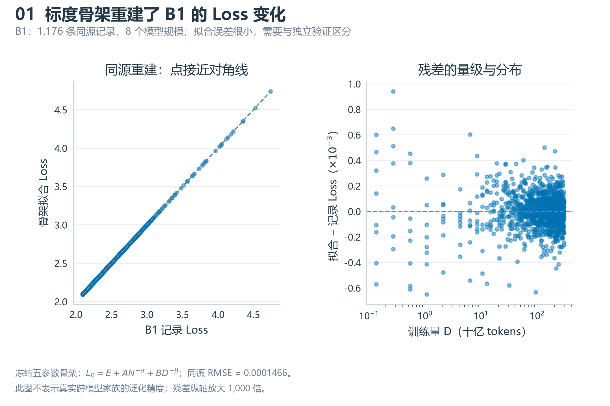
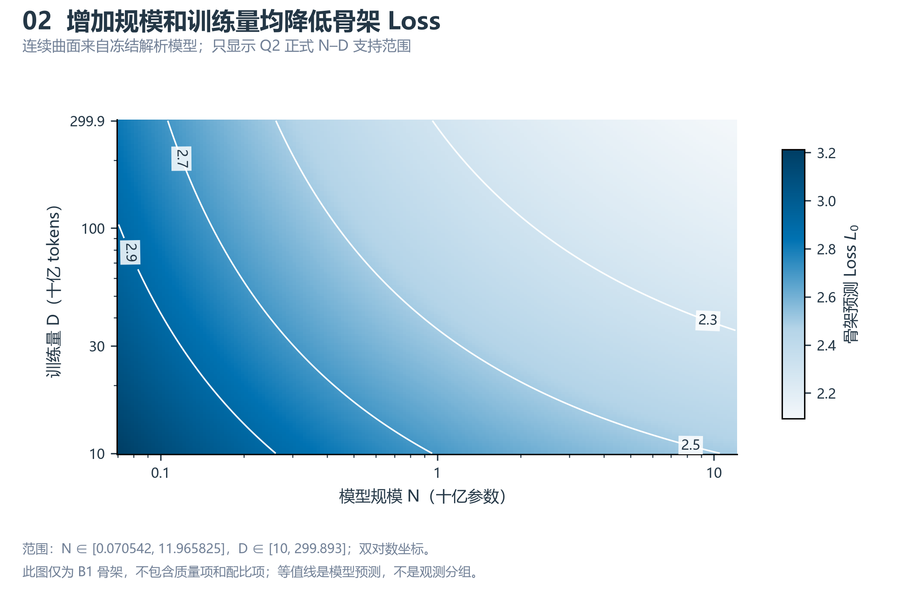
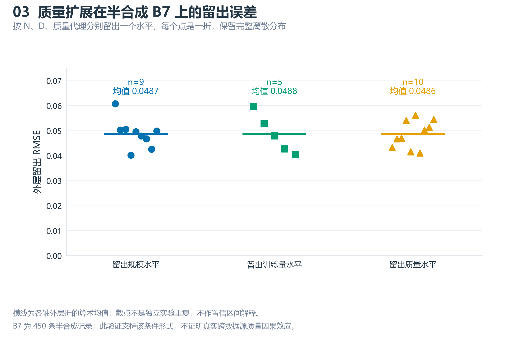
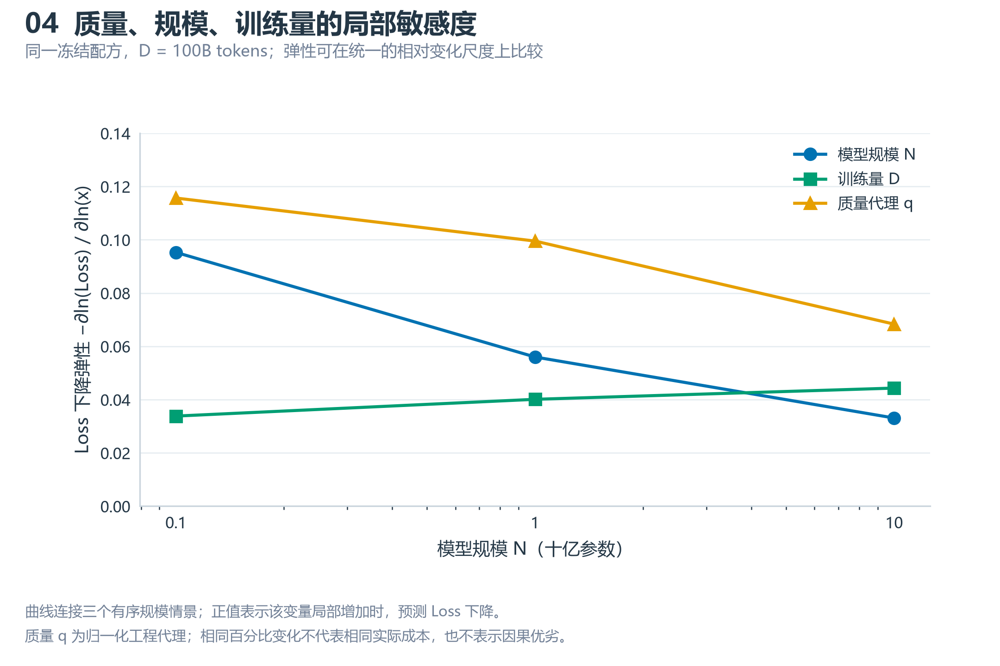
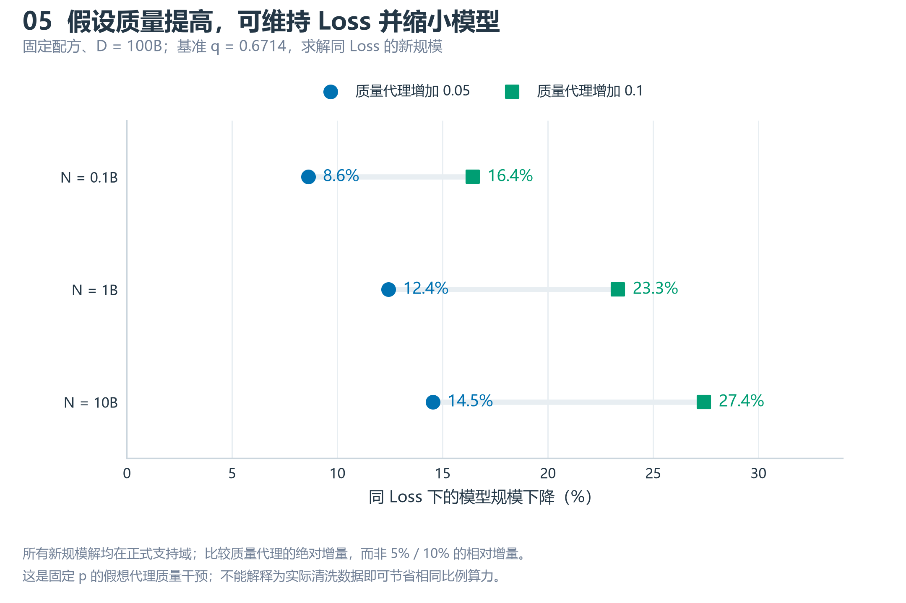
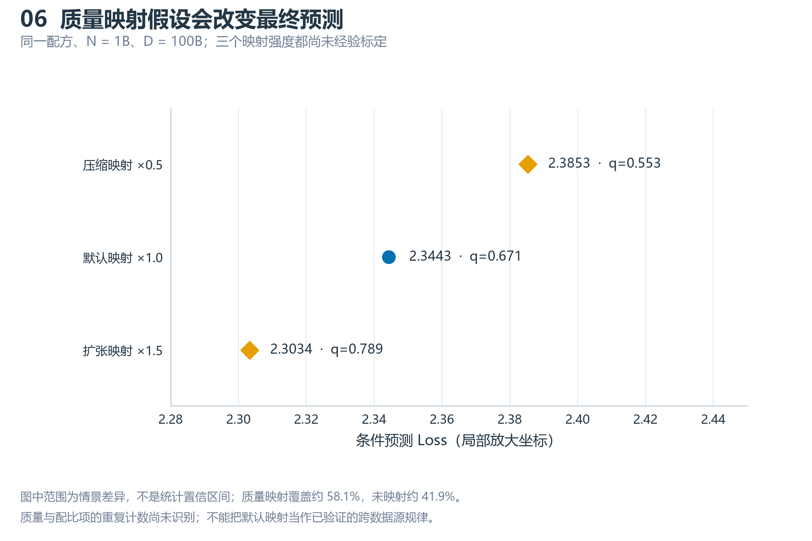
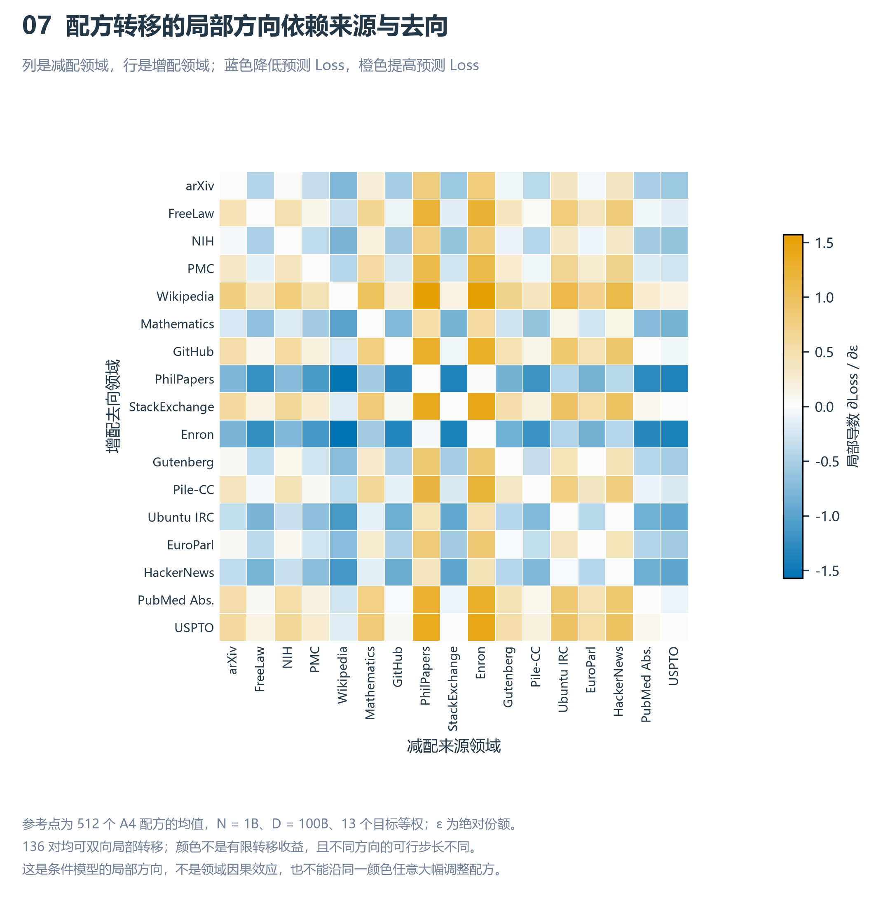

Q2 结果图册
依据 main @ a19039b 的冻结 v8 结果。与 Q1 使用同一配色。模型图为条件情景，不表示已验证的跨数据源因果规律。

冻结五参数骨架：$L_0 = E + A N^{-\alpha} + B D^{-\beta}$；同源 RMSE = 0.0001466。
此图不表示真实跨模型家族的泛化精度；残差纵轴放大 1,000 倍。
PDF · SVG
范围：N ∈ [0.070542, 11.965825]，D ∈ [10, 299.893]；双对数坐标。
此图仅为 B1 骨架，不包含质量项和配比项；等值线是模型预测，不是观测分组。
PDF · SVG
横线为各轴外层折的算术均值；散点不是独立实验重复，不作置信区间解释。
B7 为 450 条半合成记录；此验证支持该条件形式，不证明真实跨数据源质量因果效应。
PDF · SVG
曲线连接三个有序规模情景；正值表示该变量局部增加时，预测 Loss 下降。
质量 q 为归一化工程代理；相同百分比变化不代表相同实际成本，也不表示因果优劣。
PDF · SVG
所有新规模解均在正式支持域；比较质量代理的绝对增量，而非 5% / 10% 的相对增量。
这是固定 p 的假想代理质量干预；不能解释为实际清洗数据即可节省相同比例算力。
PDF · SVG
图中范围为情景差异，不是统计置信区间；质量映射覆盖约 58.1%，未映射约 41.9%。
质量与配比项的重复计数尚未识别；不能把默认映射当作已验证的跨数据源规律。
PDF · SVG
参考点为 512 个 A4 配方的均值，N = 1B、D = 100B、13 个目标等权；ε 为绝对份额。
136 对均可双向局部转移；颜色不是有限转移收益，且不同方向的可行步长不同。
这是条件模型的局部方向，不是领域因果效应，也不能沿同一颜色任意大幅调整配方。
PDF · SVG